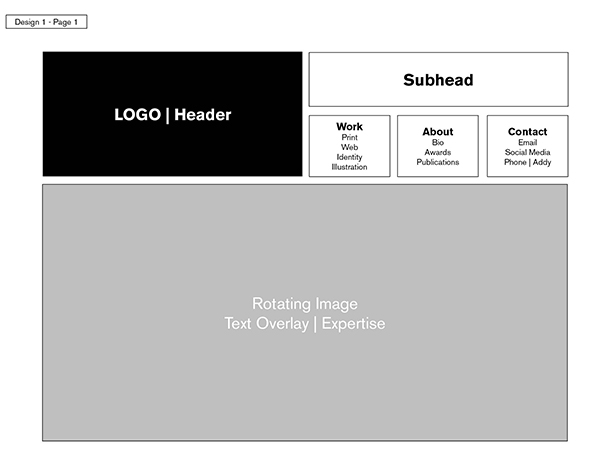
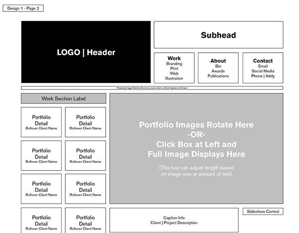
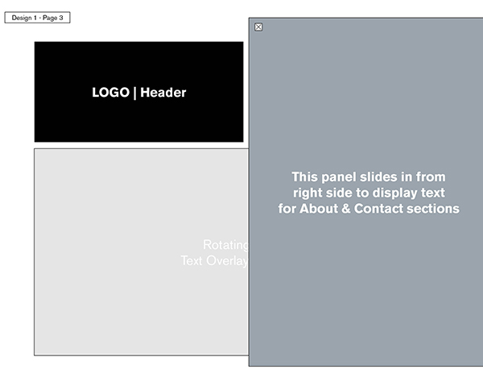
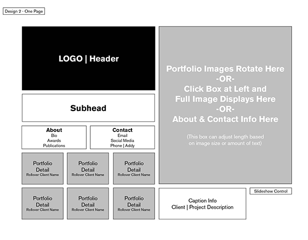

ZERO uses a stark palette of black and white. The only color occurs in the images of artists' works. The navigation is unique because it is a giant circle with nodes along the perimeter. This design is intended to emphasize creativity and unique approaches to art-making. Users are meant to relax and explore.
Planned Parenthood uses a more pragmatic grid-based design to organize a lot more information. Users of this website want information that is easy to find and clear. This site also uses complimentary colors (orange and blue) to draw the eye around the composition.
My Portfolio Concept 1: Page 1
My designs put the logo/header at the top left as the consistent focal point. The secondary focus is the main image filling most of the screen. The composition on the front page is mostly symmetrical, but following pages follow the grid in a more dynamic asymmetrical pattern.

My Portfolio Concept 1: Page 2

My Portfolio Concept 1: Page 3

My Portfolio Concept 2: One Page
My second design also places the logo on the top left side. The primary image balances it on the right side. The left columns have all the navigation elements and options, while the right half of the page displays more open breathing room with large images. There aren't any other pages in this design. It's simple navigation creates ease of use for the user.
